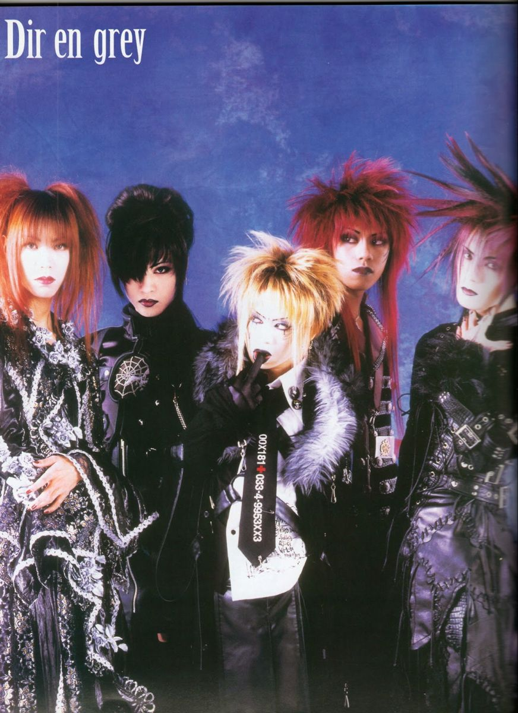
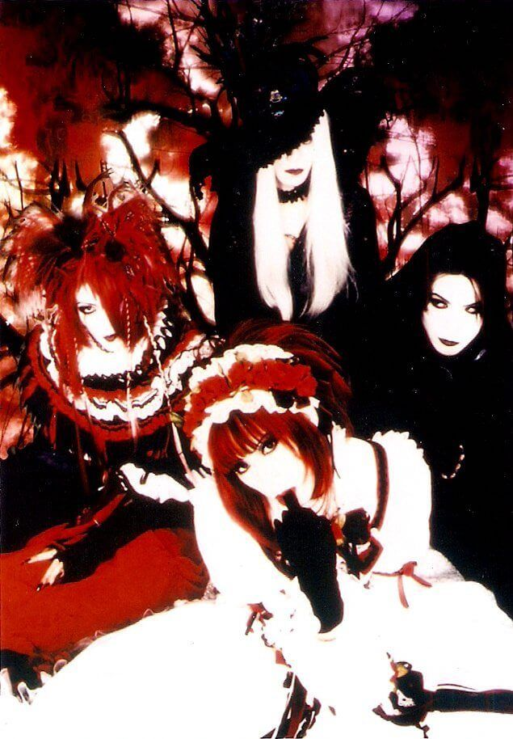
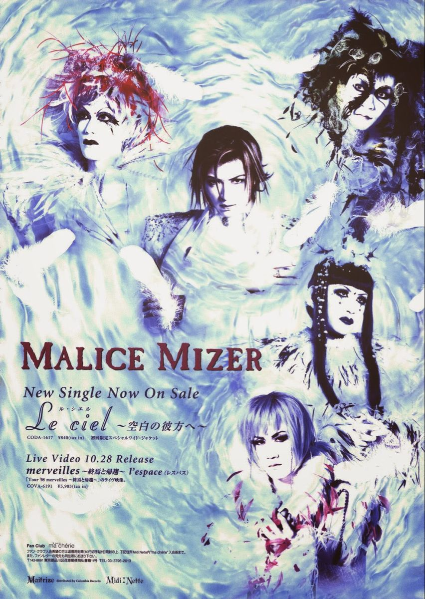
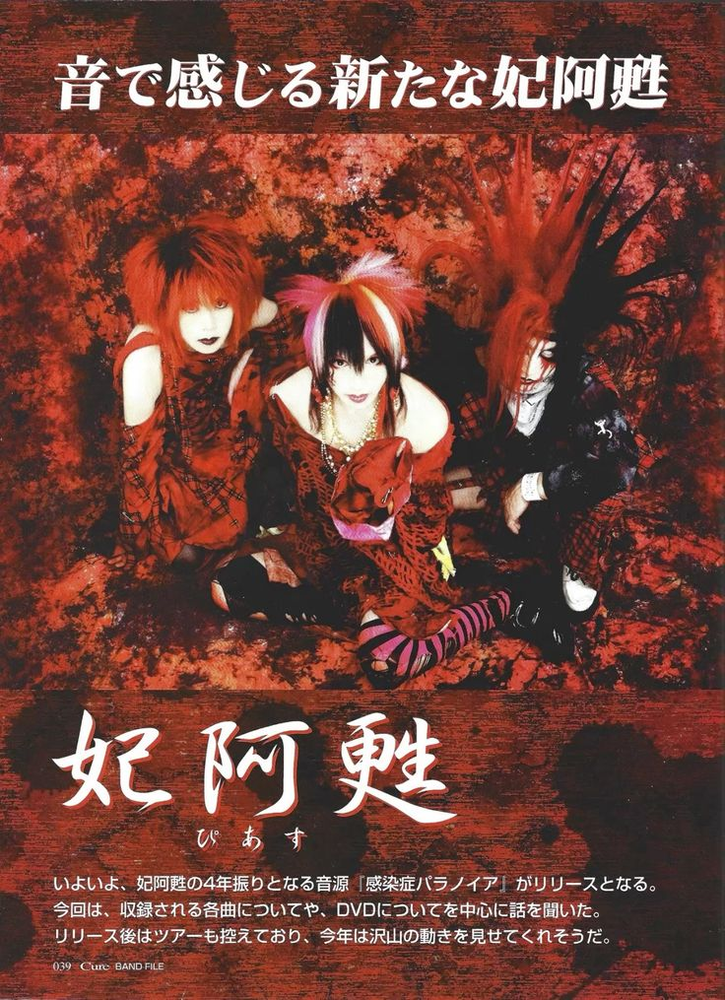

Visual kei
Visual Kei is een Japanse beweging die muziek combineert met een extreem visuele presentatie, gekenmerkt door flamboyante kapsels, dramatische make-up en uitgebreide kostuums. De stijl varieert van duistere, gotische looks tot kleurrijke en androgene outfits, waarbij de artistieke expressie van de muzikant centraal staat.



